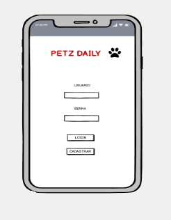
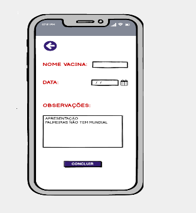

Nossos Parceiros
Sobre a Petz Daily
A PetzDaily foi criada pelo amor que os proprietários têm por cachorros e gatos.
Pensando no que eles precisam, a loja foi projetada para atender as necessidades
desses queridos peludos e peludinhos.
A satisfação da loja é oferecer produtos de ótima qualidade que atenda desde os
mimos até as necessidades mais importante dos Pets.
 O diferencial forte do software é a carteira de vacina digital.
MISSÃO
Proporcionar aos clientes conforto, tranquilidade em um local seguro para compras pela internet, oferecendo produtos de qualidade e agilidade na entrega.
VISÃO
Nos próximos 3 anos ser referência no mercado internacional de mercado Pet.
VALORES
Pró atividade;
Eficiência;
Convicção;
Ética;
Ambição.
Aplicativo
Foi identificado que os outros aplicativos de petshop não incluíam a facilidade de armazenar documentação do animal, por exemplo, carteira de vacinação e achamos que seria uma vantagem para nosso projeto.

Objetivo
Nosso objetivo é criar um sistema que possa unificar ferramentas direcionadas para animais, que geralmente são encontradas Incompletas ou com poucos recursos em outras instâncias.

Curiosidades
...